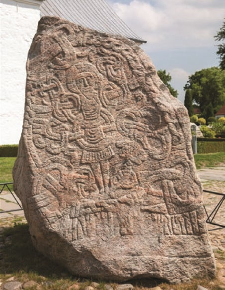
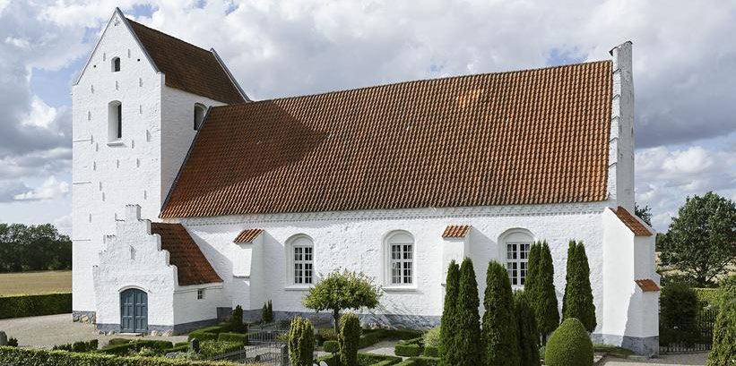
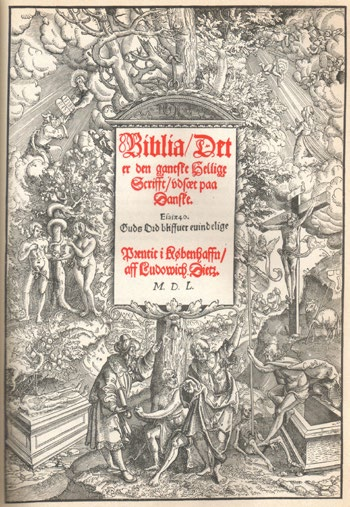
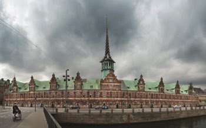
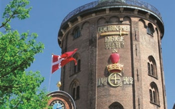
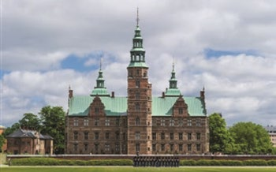
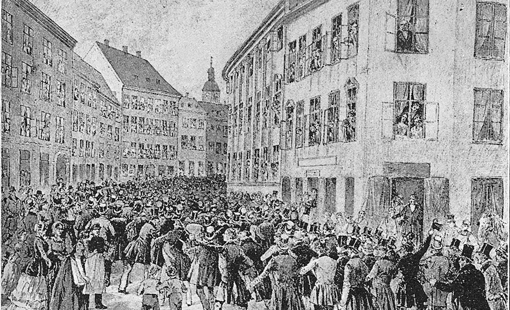
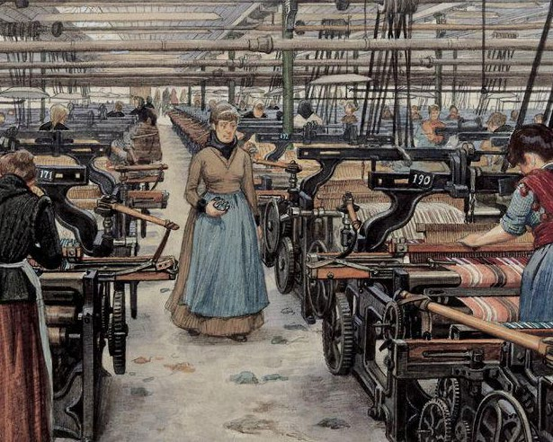
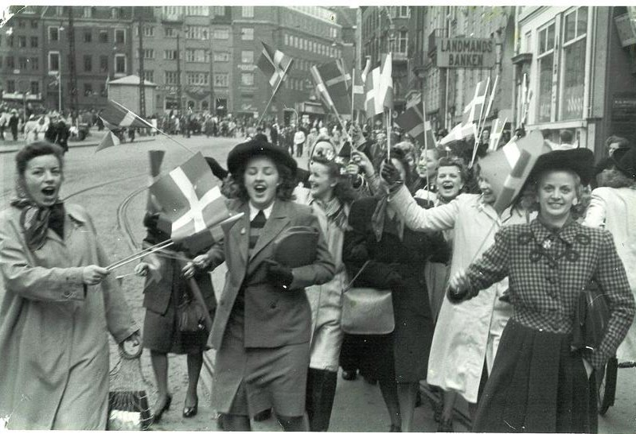

Fakta-ark 20: Danmarks
Áudio
sidde 107
Fakta-ark 20: Danmarks historie før 1945
Læremateriale Til Medborgerskabsprøven

sidde 108
Nutidens Danmark dækker et areal på ca. 43.000 km2 og har et befolkningstal på ca. seks millioner.
Læremateriale Til Medborgerskabsprøven Fakta-Ark 20: Danmarks Historie Før 1945
For 400 år siden var det anderledes. Dengang regerede den danske konge over et rige, der blandt andet omfattede Norge, Island og landområder, der nu hører til Tyskland og Sverige. Befolkningen talte således blandt andet både dansk, norsk, tysk og islandsk. Sammenlignet med tidligere, hvor landet var en stormagt i Norden og området omkring Østersøen, er Danmark i dag en mindre national stat.
Dette fakta-ark handler om: • Vigtige perioder, begivenheder og personer i Danmarks historie før 1945
Den Tidlige Historie
Omkring 12.500 f.Kr. begyndte der at komme mennesker til det område, hvor Danmark nu ligger. De første, der kom, levede af jagt og fiskeri. Flere tusind år senere – omkring 4.000 f.Kr. – gik man over til at dyrke jorden og holde husdyr. For godt 2.000 år siden blev det almindeligt at bo sammen i landsbyer. Og fra omkring 700 e.Kr. opstod der rigtige byer som fx Ribe.
Vikingetiden (Ca. 750 –1050)
Snart herefter blev større og større dele af Danmark styret af en konge. Kong Harald Blåtand, som døde i 987, rejste en runesten i Jelling. På den står der, at det var ham, Harald Blåtand, der samlede Danmark til ét rige. Denne sten kan man stadigvæk se i Jelling i Jylland. Man kalder stenen for Danmarks dåbsattest*, fordi der også står på stenen, at Harald Blåtand gjorde danskerne kristne.
Hidtil havde Danmarks befolkning dyrket en nordisk religion, der kaldes 'asatro'. Det betyder troen på aserne, der var guder. Gudernes konge hed Odin. Han er ofte beskrevet som en ældre mand med kun ét øje og to ravne siddende på skuldrene. Blandt de andre guder i asatroen kan nævnes Freja, der var gudinde for frugt barhed*. Endvidere var der torden- og Jellingestenen. Jellingestenen.

sidde 109
krigsguden Thor, der kørte hen over himlen med sin vogn, hvilket man troede var det, man kunne høre, når det tordnede.
Læremateriale Til Medborgerskabsprøven Fakta-Ark 20: Danmarks Historie Før 1945
Perioden fra ca. 750 til ca. 1050 har fået navn efter vikingerne. Det var krigere fra Skandinavien (Danmark, Norge og Sverige), som sejlede ud på togter* til andre lande, fx England, Irland, Frankrig og Rusland. Og i 1013 lykkedes det den danske konge Svend Tveskæg at erobre England. De næste cirka 30 år – frem mod 1042 – var England regeret af flere danske konger. Den mest betydningsfulde var Knud den Store, der regerede mellem 1018 og 1035.
Vikingernes skibe var hurtige; de havde sejl og årer, og de havde en flad bund, så de kunne sejle direkte op på stranden. Vikingerne fik meget krigsbytte* med hjem fra deres togter. Danmark blev i denne periode rigere. Der opstod flere byer (Odense, Aalborg og Aarhus), og de store, runde vikingeborge, fx Trelleborg og Fyrkat, er også fra denne tid.
Middelalderen (Ca. 1050-Ca. 1500)
I løbet af vikingetiden havde kongen fået mere og mere magt. Det var de rigeste mænd i landet, stormændene, utilfredse med, så der var tit konflikter mellem dem og kongen. I 1086 endte en konflikt med, at stormændene slog kongen Knud den Hellige ihjel. Det betød, at det for en tid var forbi med den stærke konge magt. Kongerne blev herefter mere afhængige af stormændene, end de havde været før.
Kristendommen kom til Danmark under kong Harald Blåtand, som selv blev døbt* omkring 965. I de første 5-600 år, efter at Danmark var blevet kristent, var den danske kirke en del af den romersk-katolske kirke. Biskopper, præster og munke arbejdede for at udbrede kristendommen i landet, og kirken fik større og større magt. Centrum for troen var byens eller landsbyens kirke, og omkring 1250 var der blevet bygget op mod 3.000 kirker i Danmark. Der blev også bygget klostre over hele landet.Bellinge Kirke på Fyn er en af Danmarks mange kirker fra middelalderen. Foto: Arnold Mikkelsen/Nationalmuseet.
Bellinge Kirke på Fyn er en af Danmarks mange kirker fra middelalderen. Foto: Arnold Mikkelsen/Nationalmuseet.

sidde 110
Kirken var rig, og den ejede en stor del af den danske jord. Kongen var nu ikke alene afhængig af stormændene, men også af kirken.
Læremateriale Til Medborgerskabsprøven Fakta-Ark 20: Danmarks Historie Før 1945
Der opstod i middelalderen fire klasser eller stænder i det danske samfund:
- Gejstligheden (præster og andre kirkelige personer)
- Adelen (stormænd, som ejede jord og havde pligt til at yde krigstjeneste)
- Borgerne (fx håndværkere og handelsfolk, som boede i byerne)
- Bønderne
I middelalderen blev Europa og Danmark ramt af pest – en sygdom, som slog mange mennesker ihjel. Det skete omkring 1350. Cirka en tredjedel af Danmarks befolkning døde. Det medførte store økonomiske og sociale forandringer i det danske samfund. Kongen fik igen mere magt – bl.a. fordi han ofte overtog den jord, som tilhørte personer, der døde af pesten.
I 1397 blev Danmark, Norge og Sverige samlet i en union. Den fik navnet Kalmar unionen, fordi den blev indgået i den svenske by Kalmar. Af afgørende betydning for dannelsen af denne union var Margrete 1., der havde magten i de tre riger frem til sin død i 1412. De tre lande var samlet i Kalmarunionen frem til 1523. Danmark og Norge fortsatte med at være i union sammen helt frem til 1814.
Reformationen (1536)
Den danske kirke brød* i 1536 med den katolske kirke og paven i Rom. Den begivenhed kalder man for reformationen. Med reformationen blev protestan tismen indført i Danmark. Kirken blev til en statskirke med kongen som over hoved.
Derudover blev Biblen også oversat til dansk, ligesom gudstjenester* og salmesang fra nu af kun foregik på dansk. I middelalderen havde kirken især brugt latin, som kun få menne sker forstod.Den første Bibel på dansk fra 1550. Foto: Nationalmuseet.
Det betød bl.a., at kongen overtog kirkens jord, ca. en tredjedel af landets dyrkede areal. Reformationen styr kede* kongens magt og gav samtidig adelen øget indflydelse på kirkens bekostning.
Den første Bibel på dansk fra 1550. Foto: Nationalmuseet.



sidde 111
Renæssancen (Ca. 1536 – Ca. 1660)
Læremateriale Til Medborgerskabsprøven Fakta-Ark 20: Danmarks Historie Før 1945
I den periode, der bliver kaldt for renæssancen, var Danmark ofte i krig med nabolandet Sverige. De to lande kæmpede om magten i området omkring Østersøen. Danmark led mange store nederlag* i disse krige. Det betød bl.a., at Danmark i 1658 tabte Skåne, Halland og Blekinge til Sverige.
Christian 4. er en af de mest kendte konger gennem Danmarks historie. Han var konge i næsten 60 år fra 1588 til 1648. Han er bl.a. kendt for sin store byggelyst. Børsen, Runde tårn og slottet Rosenborg – alle tre i København – hører til Christian 4.s mest kendte bygningsværker.
Enevælden Og Landbore Formerne (1660 – 1848)
De mange nederlag og tabet af Skåne, Halland og Blekinge førte til en politisk krise i Danmark. Resultatet af krisen blev, at landet fik en ny styreform i 1660-61. Før den tid var Danmark et valgkongedømme, dvs., at kongen blev valgt af adelen. I stedet for et valgkongedømme fik man i 1660 et arveligt monarki. Kongemagten skulle nu automatisk gå i arv inden for kongehuset. Således var det kongens ældste søn, som arvede titlen som konge. Kongen blev også enevældig. Det skete i 1661. Det betød, at kongen fik hele magten i landet. Han kunne regere uafhængigt af adelen. Enevælden varede frem til 1848.
Børsen, Rundetårn og slottet Rosenborg – alle tre i København – hører til Christian 4.s mest kendte bygningsværker.
I slutningen af 1700-tallet blev der i Danmark gennemført en række landbore former, som fik stor betydning for det danske samfund. I 1788 blev det såkaldte "Stavnsbånd" afskaffet. Stavnsbåndet havde tvunget de fleste bønder til at arbejde for en bestemt godsejer og bo et bestemt sted. Reformerne betød derfor blandt andet, at bønderne nu selv kunne bestemme, hvor de ville arbejde og bo. Reformerne betød også, at bønderne kunne eje deres egen jord i stedet for at leje den af godsejeren. Og det betød, at der opstod en ny gruppe i samfundet: selvstændige gårdmænd.Børsen, Rundetårn og slottet Rosenborg – alle tre i København – hører til Christian 4.s mest kendte bygningsværker.

sidde 112
Landboreformerne fik også betydning for, hvor bøndernes gårde lå. Før landbo reformerne boede bønderne sammen i landsbyer og dyrkede i fællesskab jorden omkring landsbyen. Nu blev den enkelte gård ofte flyttet fra landsbyen ud på selve den mark, som bonden dyrkede. Dette er stadig synligt i det danske land skab, hvor mange gårde ligger for sig selv midt på den jord, som hører til gården. De nye, selvstændige gårdmænd fik større økonomisk frihed, men de havde som resten af befolkningen ingen politiske rettigheder. Det var stadig kongen, der bestemte det hele.
Læremateriale Til Medborgerskabsprøven Fakta-Ark 20: Danmarks Historie Før 1945
Demokrati (1849)
Fra slutningen af 1700-tallet og op gennem første halvdel af 1800-tallet bredte tankerne om frihed til den enkelte borger og lighed mellem mennesker sig. I Danmark voksede utilfredsheden med, at kongen var enevældig. Man ønskede i stedet en demokratisk forfatning, der begrænsede kongens magt. Forfatningen skulle sikre, at befolkningen fik indflydelse* på de beslutninger, der blev taget i landet.
Grundloven fra 1849 betød dog ikke, at alle borgere fik politisk indflydelse. Fx kunne kvinder, fattige og mænd under 30 år ikke stemme til Rigsdagen. Det fik de først mulighed for senere, i forbindelse med at grundloven blev ændret i 1915. Men sammenlignet med de fleste andre staters forfatninger på den tid var den danske grundlov meget demokratisk. Demonstration i København i 1848 for en demokratisk for
Demonstration i København i 1848 for en demokratisk forfatning.
Kong Frederik 7. gav i 1848 efter for kravet om demokrati. Han afgav sin enevæl dige magt og erklærede sig som konstitutionel konge. Det førte til Danmarks første frie forfatning, Danmarks Riges Grundlov af 5. juni 1849. Grundloven betød, at Danmark fik to lovgivende forsamlinger: Folketinget og Landstinget, der sammen blev kaldt for Rigsdagen. Befolkningen kunne stemme om, hvem der skulle sidde i Rigsdagen, og fik dermed indflydelse på lovgivningen i Danmark.

sidde 113
Et Lille Land (1864 – 1914)
Læremateriale Til Medborgerskabsprøven Fakta-Ark 20: Danmarks Historie Før 1945
I forbindelse med en krig mellem Det Tyske Forbund og Danmark i 1864 mistede Danmark de to hertugdømmer Slesvig og Holsten. Disse to områder havde gennem lang tid været en del af det danske rige. Nu blev Danmark meget mindre. Derfor blev det vigtigt at bruge det, der var tilbage af Danmarks jord, bedst muligt for at skabe vækst. Man gik fx i gang med at opdyrke den jyske hede. Og mange landmænd begyndte at avle dyr i stedet for blot at dyrke korn, fordi de kunne tjene mange flere penge på fx smør, flæsk og æg end på kornprodukter.
Flere af Folketingets nuværende partier opstod i slutningen af 1800-tallet og begyndelsen af 1900-tallet. De fleste bønder samlede sig om partiet Venstre, der blev dannet i 1870, mens godsejerne, de mere velstillede mennesker i byerne og ansatte i politiet, hæren og embedsmænd typisk stemte på Højre, som i 1915-16 blev til Det Konservative Folkeparti. I 1905 meldte en del af Venstres medlemmer sig ud og dannede Det Radikale Venstre, som især husmænd* og akademikere i de større byer stemte på.Maleri af tøj-fabrik i København i slutningen af 1800-tallet.
Maleri af tøj-fabrik i København i slutningen af 1800-tallet.
Fra 1840’erne blev der bygget jernbaner i Danmark. Det betød, at man pludselig kunne transportere varer og mennesker meget hurtigere end tidligere. Og efter 1870 begyndte industrialiseringen også at gå meget hurtigere. De mange nye fabrikker, som normalt lå i byerne, havde brug for meget arbejdskraft. Det betød bl.a., at mange fattige landarbejdere flyttede til byerne for at arbejde. Der opstod dermed en ny befolknings-gruppe: arbejderklassen. Og i løbet af 1870'erne blev der også dannet et politisk arbejderparti, Socialdemokratiet.

sidde 114
Tyske fly over København 9. april 1940.Fejring af befrielsen efter fem års tysk besættelse i København den 5. ma
Neutralitet Og Besættelse (1914 – 1945)
Læremateriale Til Medborgerskabsprøven Fakta-Ark 20: Danmarks Historie Før 1945
Krigens sidste halvandet år var præget* af en voksende modstand mod den tyske besættelsesmagt. Tyskerne og deres danske samarbejdspartnere blev angrebet i forskellige aktioner, hvor der blev brugt våben og sprængstoffer*. Danmark blev officielt befriet af britiske tropper den 5. maj 1945.Tyske fly over København 9.
Danmark var neutralt under 1. Verdenskrig (1914 – 1918). Under 2. Verdens krig besatte* tyske tropper Danmark den 9. april 1940. Regeringen besluttede at bøje* sig og var tvunget til at samarbejde med den tyske besættelsesmagt. Den folkelige modstand mod den tyske besættelsesmagt blev efterhånden så stor, at samarbejdet med Tyskland brød* sammen i august 1943. Regeringen indgav sin afskedsbegæring*, og den danske hær blev opløst.
Fejring af befrielsen efter fem års tysk besættelse i København den 5. maj 1945.
Fonte: Læremateriale til Medborgerskabsprøven, SIRI.